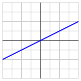
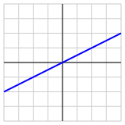

Worksheet \(\S 3.5\text{:}\) Subspaces (Solutions)
2. Preview Activity 3.5.1.
Let’s consider the following matrix \(A\) and its reduced row echelon form.
\begin{equation*}
A = \left[\begin{array}{rrrr}
2 \amp -1 \amp 2 \amp 3 \\
1 \amp 0 \amp 0 \amp 2 \\
-2 \amp 2 \amp -4 \amp -2 \\
\end{array}\right]
\sim
\left[\begin{array}{rrrr}
1 \amp 0 \amp 0 \amp 2 \\
0 \amp 1 \amp -2 \amp 1 \\
0 \amp 0 \amp 0 \amp 0 \\
\end{array}\right]\text{.}
\end{equation*}
(a)
(b)
Give a parametric description of the solution space to the homogeneous equation \(A\xvec = \zerovec\text{.}\)
Solution.
From the reduced row echelon form, we see that the homogeneous equation leads to the equations
\begin{equation*}
\begin{alignedat}{5}
x_1 \amp \amp \amp \amp \amp {}+{} \amp 2x_4 \amp
{}={} \amp 0 \\
\amp \amp x_2 \amp {}-{} \amp 2x_3 \amp {}+{} \amp
x_4 \amp {}={} \amp 0\text{,} \\
\end{alignedat}
\end{equation*}
which leads to the parametric description
\begin{equation*}
\xvec=\fourvec{x_1}{x_2}{x_3}{x_4} =
\fourvec{-2x_4}{2x_3-x_4}{x_3}{x_4} =
x_3\fourvec{0}{2}{1}{0} + x_4\fourvec{2}{-1}{0}{1}\text{.}
\end{equation*}
(c)
Explain how this parametric description produces two vectors \(\wvec_1\) and \(\wvec_2\) whose span is the solution space to the equation \(A\xvec = \zerovec\text{.}\)
(d)
What can you say about the linear independence of the set of vectors \(\wvec_1\) and \(\wvec_2\text{?}\)
(e)
Let’s denote the columns of \(A\) as \(\vvec_1\text{,}\) \(\vvec_2\text{,}\) \(\vvec_3\text{,}\) and \(\vvec_4\text{.}\) Explain why \(\vvec_3\) and \(\vvec_4\) can be written as linear combinations of \(\vvec_1\) and \(\vvec_2\text{.}\)
(f)
Explain why \(\vvec_1\) and \(\vvec_2\) are linearly independent and
\begin{equation*}
\laspan{\vvec_1,\vvec_2} =
\laspan{\vvec_1, \vvec_2, \vvec_3, \vvec_4}.
\end{equation*}
Solution.
We see that \(\vvec_1\) and \(\vvec_2\) are linearly independent from the reduced row echelon form of \(A\text{.}\) Moreover, we know that \(\vvec_3\) and \(\vvec_4\) can be written as linear combinations of \(\vvec_1\) and \(\vvec_2\text{.}\) Therefore, any linear combination of \(\vvec_1\text{,}\) \(\vvec_2\text{,}\) \(\vvec_3\text{,}\) and \(\vvec_4\) can be written as a linear combination of \(\vvec_1\) and \(\vvec_2\) alone.
3. Definition: Subspace.
A subspace of \(\R^n\) is a
4. Activity: Subspaces.
We will look at some sets of vectors and the subspaces they form.
-
If \(\vvec_1, \vvec_2,\ldots,\vvec_n\) is a set of vectors in \(\real^m\text{,}\) explain why \(\zerovec\) can be expressed as a linear combination of these vectors. Use this fact to explain why the zero vector \(\zerovec\) belongs to any subspace in \(\real^m\text{.}\)
-
Explain why the line on the left of Figure 26 is not a subspace of \(\real^2\) and why the line on the right is.
 
Figure 26. Two lines in \(\real^2\text{,}\) one of which is a subspace and one of which is not. -
Consider the vectors\begin{equation*} \vvec_1=\threevec101,~~~ \vvec_2=\threevec011,~~~ \vvec_3=\threevec110, \end{equation*}and describe the subspace \(S=\laspan{\vvec_1,\vvec_2,\vvec_3}\) of \(\real^3\text{.}\)
-
Consider the vectors\begin{equation*} \wvec_1=\threevec210,~~~ \wvec_2=\threevec{-1}1{-1},~~~ \wvec_3=\threevec03{-2} \end{equation*}
-
Explain why \(\laspan{\wvec_1,\wvec_2,\wvec_3} = \laspan{\wvec_1, \wvec_2}\text{.}\)
-
Suppose that \(\vvec_1\text{,}\) \(\vvec_2\text{,}\) \(\vvec_3\text{,}\) and \(\vvec_4\) are four vectors in \(\real^3\) and that\begin{equation*} \begin{bmatrix} \vvec_1 \amp \vvec_2 \amp \vvec_3 \amp \vvec_4 \end{bmatrix} \sim \begin{bmatrix} 1 \amp 2 \amp 0 \amp -2 \\ 0 \amp 0 \amp 1 \amp 1 \\ 0 \amp 0 \amp 0 \amp 0 \\ \end{bmatrix}. \end{equation*}Give a description of the subspace \(S=\laspan{\vvec_1,\vvec_2,\vvec_3,\vvec_4}\) of \(\real^3\text{.}\)
Solution.
-
If we choose all the weights \(c_1=c_2=\ldots=c_n = 0\text{,}\) then the linear combination\begin{equation*} c_1\vvec_1 + c_2\vvec_2 + \cdots + c_n\vvec_n = \zerovec. \end{equation*}This means that \(\zerovec\) is the subspace \(S=\laspan{\vvec_1,\vvec_2,\ldots,\vvec_n}\text{.}\)
-
The line on the left cannot be a subspace of \(\real^2\) since it does not contain the zero vector. The line on the right is a subspace because it can be represented as the span of any nonzero vector on the line.
-
The matrix whose columns are the given vectors has a pivot in every row. Therefore, the span of these vectors is \(\real^3\) and so \(S=\laspan{\vvec_1,\vvec_2,\vvec_3} = \real^3\text{.}\)
-
-
We see that \(\wvec_3 = \wvec_1 + 2\wvec_2\text{.}\)
-
Any linear combination\begin{equation*} c_1\wvec_1 + c_2\wvec_2 + c_2\wvec_3 = (c_1 + c_2)\wvec_1 + (c_2+2c_2)\wvec_2. \end{equation*}
-
The subspace \(S=\laspan{\wvec_1,\wvec_2,\wvec_3} = \laspan{\wvec_1,\wvec_2}\) is a plane in \(\real^3\text{.}\)
-
-
Since we can write \(\vvec_2 = 2\vvec_1\) and \(\vvec_4 = -2\vvec_1 + \vvec_2\text{,}\) then\begin{equation*} S = \laspan{\vvec_1,\vvec_2,\vvec_3,\vvec_4} = \laspan{\vvec_1,\vvec_3}, \end{equation*}which is a plane in \(\real^3\text{.}\)
5. Definition: Basis.
Just as with \(\real^n\text{,}\) we are typically interested in representing a subspace efficiently.
6. Two Important Subspaces.
Given a matrix \(A\text{,}\) there are two important subspaces that we’ve seen previously:
7. Definition: Column Space.
8. Activity: Column Space.
We will explore some column spaces in this activity.
-
Consider the matrix\begin{equation*} A= \left[\begin{array}{rrr} \vvec_1 \amp \vvec_2 \amp \vvec_3 \end{array}\right] = \left[\begin{array}{rrr} 1 \amp 3 \amp -1 \\ -2 \amp 0 \amp -4 \\ 1 \amp 2 \amp 0 \\ \end{array}\right]. \end{equation*}Since \(\col(A)\) is the span of the columns, we have\begin{equation*} \col(A) = \laspan{\vvec_1,\vvec_2,\vvec_3}. \end{equation*}Explain why \(\vvec_3\) can be written as a linear combination of \(\vvec_1\) and \(\vvec_2\) and why \(\col(A)=\laspan{\vvec_1,\vvec_2}\text{.}\)
-
Explain why the vectors \(\vvec_1\) and \(\vvec_2\) form a basis for \(\col(A)\) and why \(\col(A)\) is a 2-dimensional subspace of \(\real^3\) and therefore a plane.
-
Now consider the matrix \(B\) and its reduced row echelon form:\begin{equation*} B = \left[\begin{array}{rrrr} -2 \amp -4 \amp 0 \amp 6 \\ 1 \amp 2 \amp 0 \amp -3 \\ \end{array}\right] \sim \left[\begin{array}{rrrr} 1 \amp 2 \amp 0 \amp -3 \\ 0 \amp 0 \amp 0 \amp 0 \\ \end{array}\right]. \end{equation*}Explain why \(\col(B)\) is a 1-dimensional subspace of \(\real^2\) and is therefore a line.
-
For a general matrix \(A\text{,}\) what is the relationship between the dimension \(\dim~\col(A)\) and the number of pivot positions in \(A\text{?}\)
-
How does the location of the pivot positions indicate a basis for \(\col(A)\text{?}\)
-
If \(A\) is an invertible \(9\times9\) matrix, what can you say about the column space \(\col(A)\text{?}\)
-
Suppose that \(A\) is an \(8\times 10\) matrix and that \(\col(A) = \real^8\text{.}\) If \(\bvec\) is an 8-dimensional vector, what can you say about the equation \(A\xvec = \bvec\text{?}\)
Solution.
-
We have\begin{equation*} A=\left[\begin{array}{rrr} 1 \amp 3 \amp -1 \\ -2 \amp 0 \amp -4 \\ 1 \amp 2 \amp 0 \\ \end{array}\right]\sim \left[\begin{array}{rrr} 1 \amp 0 \amp 2 \\ 0 \amp 1 \amp -1 \\ 0 \amp 0 \amp 0 \\ \end{array}\right]\text{,} \end{equation*}which shows that the vectors are not linearly independent and, in fact, that \(\vvec_3 = 2\vvec_1 - \vvec_2\text{.}\) As we’ve seen several times, this means that any linear combination of \(\vvec_1\text{,}\) \(\vvec_2\text{,}\) and \(\vvec_3\) can be written as a linear combination of \(\vvec_1\) and \(\vvec_2\) alone and hence that\begin{equation*} \col(A)=\laspan{\vvec_1,\vvec_2,\vvec_3} = \laspan{\vvec_1,\vvec_2}. \end{equation*}
-
The reduced row echelon form of \(A\) shows that \(\vvec_1\) and \(\vvec_2\) are linearly independent. We also know that the span of these two vectors is \(\col(A)\text{.}\) Therefore, they form a basis for \(\col(A)\text{.}\)
-
Denoting the columns of \(B\) as \(\vvec_i\text{,}\) the reduced row echelon form shows that \(\vvec_2=2\vvec_1\text{,}\) \(\vvec_3=0\vvec_1\text{,}\) and \(\vvec_4 = -3\vvec_1\text{.}\) Therefore, any linear combination of \(\vvec_1\text{,}\) \(\vvec_2\text{,}\) \(\vvec_3\text{,}\) and \(\vvec_4\) can be written as a linear combination of \(\vvec_1\) alone. This means that \(\vvec_1\) forms a basis for \(\col(A)\text{,}\) which is then the line consisting of all scalar multiples of \(\vvec_1\text{.}\) p
-
The number of vectors in a basis of \(\col(A)\) equals the number of pivot positions. Therefore, \(\dim~\col(A)\) equals the number of pivot positions in \(A\text{.}\)
-
As the examples in this activity illustrate, the columns of \(A\) that contain pivot positions form a basis for \(\col(A)\text{.}\)
-
If \(A\) is invertible, then it has a pivot position in every row, which means that the span of the columns is \(\real^9\text{.}\) Therefore, \(\col(A) = \real^9\text{.}\)
-
Since \(\col(A)=\real^8\text{,}\) we know that every 8-dimensional vector \(\bvec\) is in \(\col(A)\text{.}\) This means that \(\bvec\) is in the span of the columns of \(A\) so the equation \(A\xvec = \bvec\) must be consistent.
9. Definition: Rank.
Pivot positions are important in helping us determine both the dimension of \(\col(A)\) and a basis for \(\col(A)\text{.}\)
The rank of a matrix \(A\) is